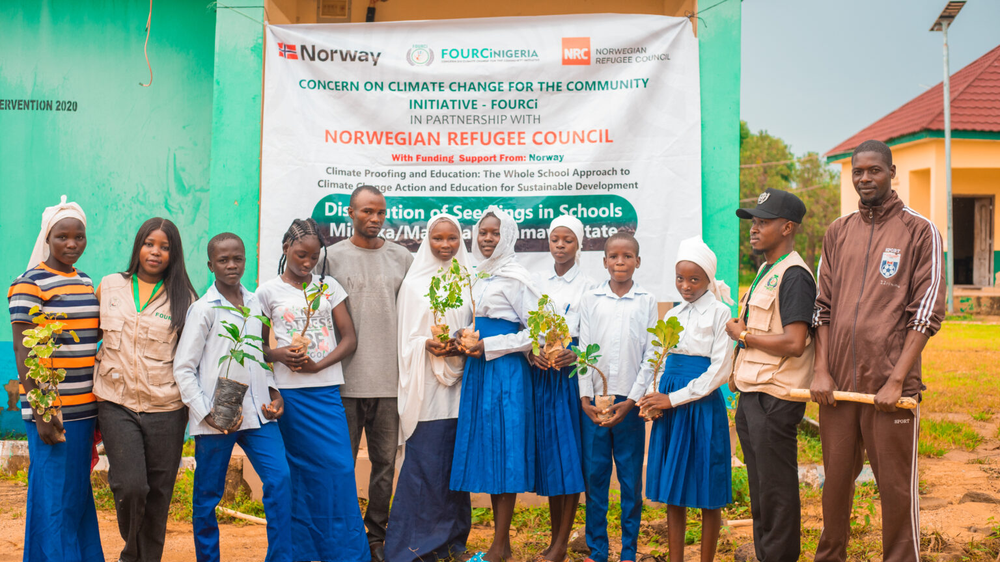

About FOURCi
A coalition of experts and community volunteers protecting the environment and building resilience in the face of climate change.
Climate action begins within communities
Concern on Climate Change for the Community Initiative (FOURCi) is a leading non-profit organisation committed to safeguarding the environment and empowering communities to adapt, respond, and thrive in the face of climate change.
Established as a coalition of Academics, Environmentalists, Agricultural Experts, Health Professionals, Building and Construction Specialists, and passionate community volunteers, FOURCi brings together a diverse range of expertise under one united vision — to protect our planet and secure a sustainable future for all.
Through research-driven initiatives, community-based programmes, and strategic partnerships, we address the environmental challenges affecting vulnerable populations, especially women, youth, farmers, and rural dwellers. We collaborate with government agencies, development partners, civil society organisations, traditional institutions, and local communities to design and implement solutions that make a lasting impact.
What guides everything we do
Mission
To empower individuals, communities, and institutions to combat climate change and disasters by promoting sustainable practices and interventions at local, national, and international levels, with a focus on uplifting and involving women, young girls, and children in these efforts.
Vision
Aiming for a world free from climate change through sustainable practices.
More than guiding principles
At FOURCi, our vision and mission are more than just guiding principles — they are the foundation of our commitment to action. Every project, partnership, and intervention is designed to create a measurable impact that aligns with our goals of addressing climate change, fostering resilience, and empowering communities.
We are dedicated to addressing the growing challenges of climate change and its impact on vulnerable communities. Our work revolves around delivering targeted solutions, promoting awareness, and building resilience through sustainable practices and community-driven initiatives.
Many disciplines, one united vision
FOURCi brings together the expertise needed to tackle climate change from every angle.
Academics
Environmentalists
Agricultural experts
Health professionals
Building & construction specialists
Community volunteers
Eight areas of work
Integrated programmes that connect climate resilience with human development.
Environmental Sustainability and Afforestation
WASH and Protection Services
Sustainable Livelihoods and Climate-Smart Agriculture
Climate Change Education and Awareness
Advocacy and Policy Engagement
Research and Development
Disaster Response and Resilience Building
Capacity Building and Community Empowerment
Our reach so far

Join forces with us to save our planet.
Whether you’re looking to volunteer, partner, or just learn more, we’re here for you.